Everyone's racing to spawn more agents. Porcelain stands on the other side of the pile: run Claude Code, Codex, OpenCode and Grok in one lightweight window — Mac, Linux, or any browser — and review what they built the way you'd read a feature: as a story, not a file list.
macOS (Apple Silicon) · Linux (x64) · v0.35.1
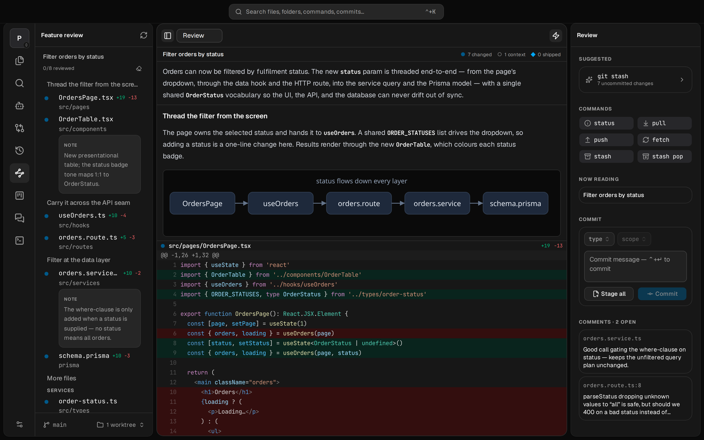
The bottleneck moved from writing to reading, reviewing, and understanding what the agent produced. For engineers shipping real software, reading it closely is the job.
Cursor, Zed, VS Code are built for authoring: LSP, extensions, refactors. Heavy and slow when you just need to read.
They show diffs as an alphabetical list of files, with no sense of how a change actually flows through the stack.
The new tools race to spawn more agents in more worktrees. The pile of unreviewed diffs just grows — none of them help you trust what came out.
Your agent built the feature — so it publishes the Review: a thesis, then walkthrough sections in the order the code runs, entry point to data, each with prose and the exact code it explains — ending with evidence that it verified its own work. You read a document, not a pile of diffs.
Pages, components, hooks, routes, services, data. Porcelain sorts a working-tree diff into the layers of your codebase instead of one flat A-to-Z list, so related changes sit together and you read in passes that make sense.
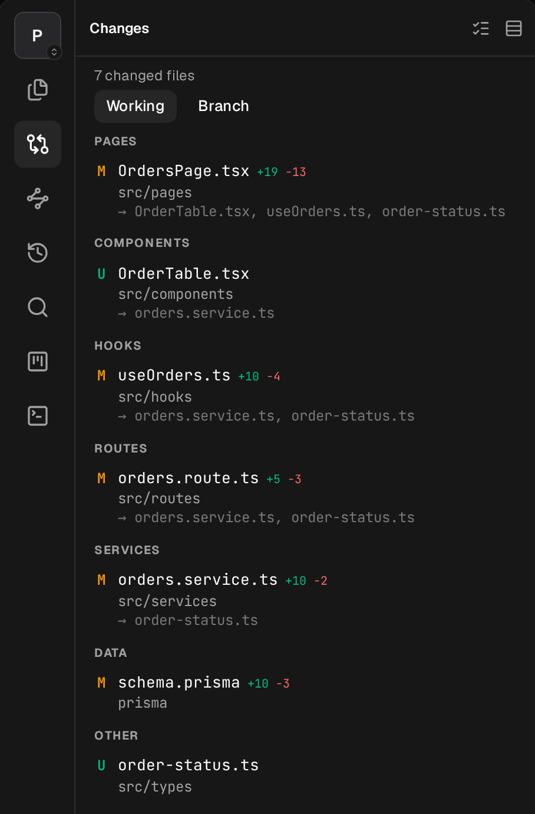
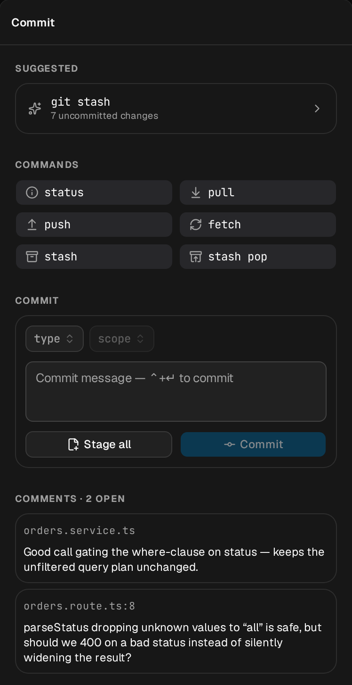
When the read is done, finish the job in place. A commit composer with conventional-commit type and scope chips, suggested next steps, and one-click status, pull, push, fetch and stash. No dropping back to a shell.
Start a thread and drive Claude Code, Codex, OpenCode, or Grok without leaving the window you read in. Threads survive reloads, you watch what the agent is doing as it works, and every review comment lands in the same tool it's working in.
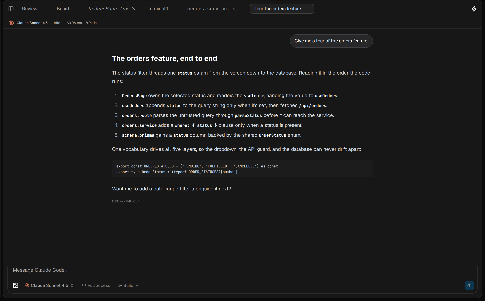
A bundled local CLI your agents already know how to use, plus companion skills: local files only — no server, no port, no telemetry. Your comments become its review context; its work and resolutions flow back to you, on the same feature, in the same order.
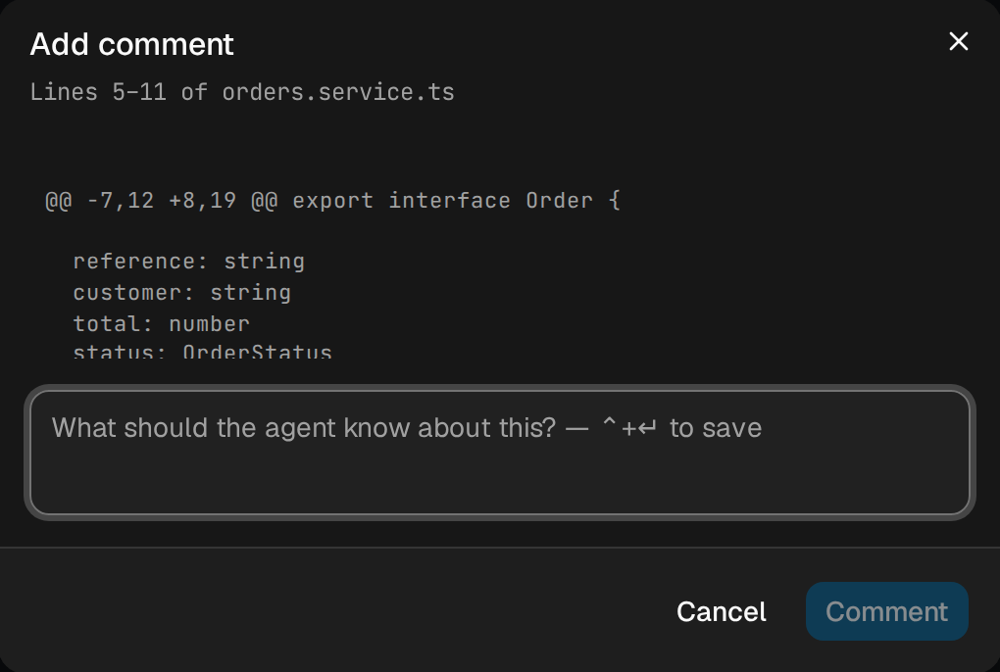
Select a line or a range, or right-click a whole file, and leave a note: "what should the agent know about this?" Your comments travel to the agent as review context, so it fixes the right thing and marks each one resolved.
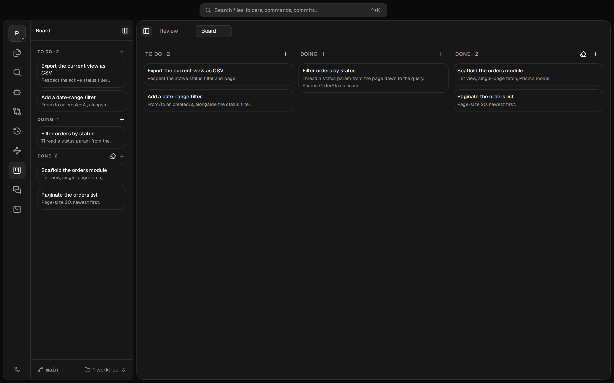
A per-repo To Do / Doing / Done board your agent drives through the bundled CLI. It reads what's planned, moves cards as it works, and writes back what it shipped, all without leaving the same window you review in.
Right-click a folder to hide it: it dims out and stops loading. Pin the files and folders you work in to the workspace for one-tap access. Nothing is indexed until you open it, so even huge repos stay instant.
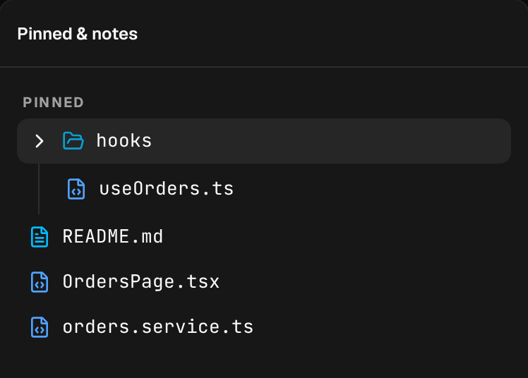
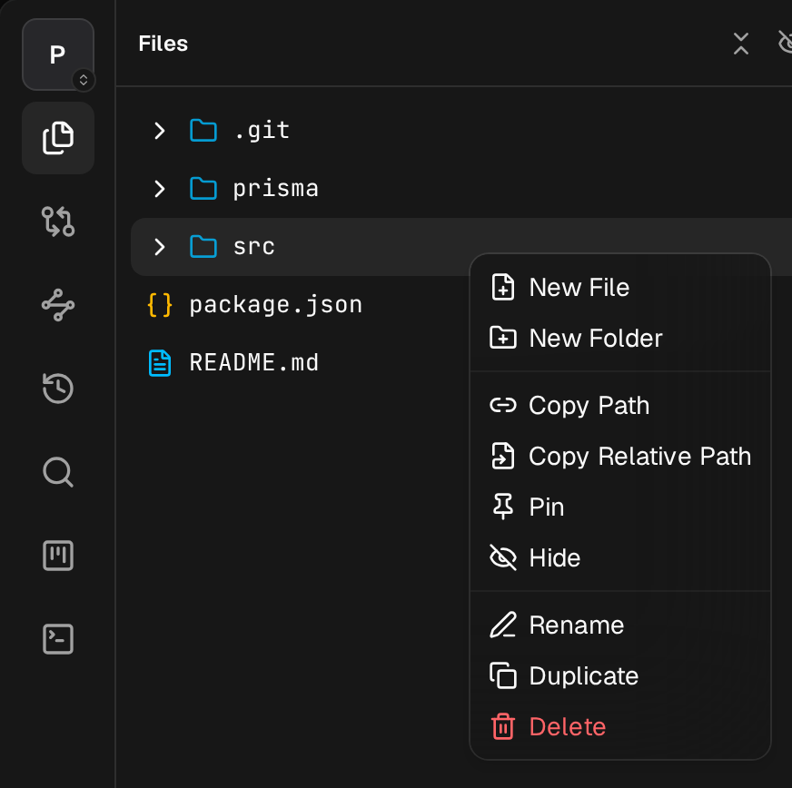
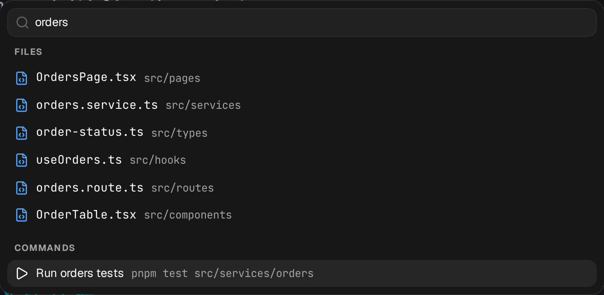
One bar for files, folders, saved commands and commits. Type a few letters and jump straight there.
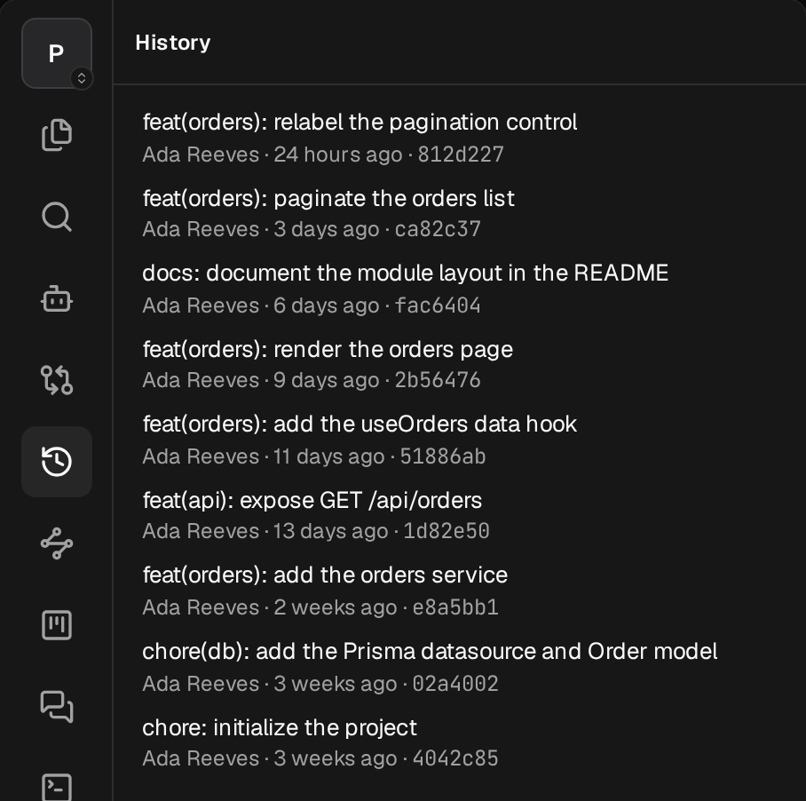
Browse commits with full messages, author and date, and read the diff behind any of them.
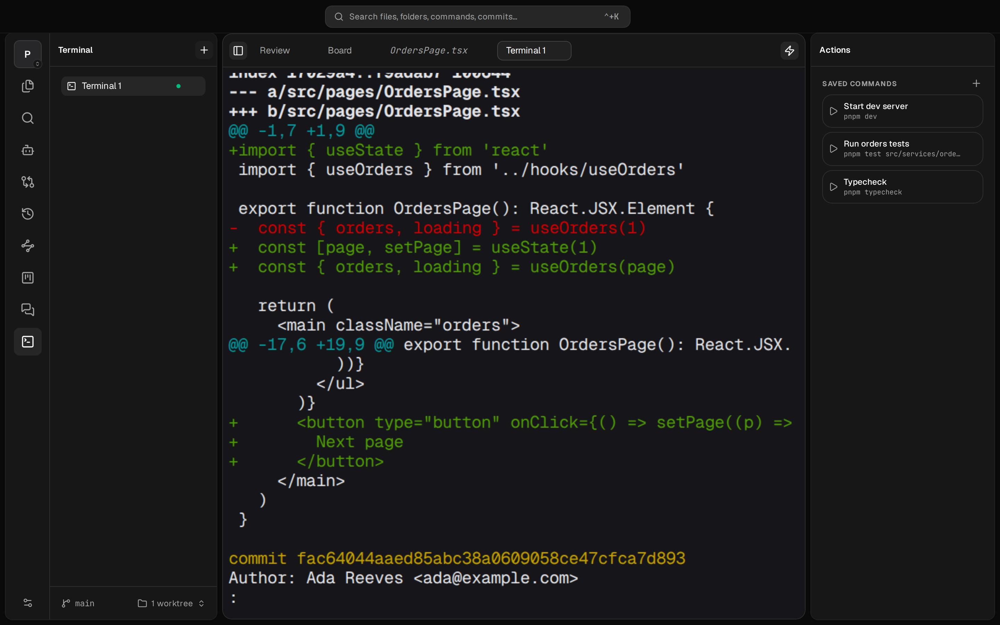
A real terminal, right in the window. Save the commands you run often. The agent can curate them, and you run them.
macOS on Apple Silicon, or Linux x64 (AppImage / deb). Auto-updating: it checks on its own and installs on quit.
Download for macOS Download for LinuxAppImage & deb, x64. No account. No telemetry. Free forever.
There's nothing to wire up: the agent channel is a bundled CLI that installs itself on every launch — no server, no port, no config. Teach your agents the workflow with the companion skills:
Provider install & sign-in status lives in Settings → Agents. Update the skills later with npx skills upgrade.
Run the daemon on any machine you own — a home server, a cloud box — and every device with a browser becomes a client, iPad included. Terminals and review state live on the host, so they survive reconnects.
Start it when you work, Ctrl+C when you're done.
Read every line, build it from source, open an issue, or send a patch. No tracking, no accounts, all local.